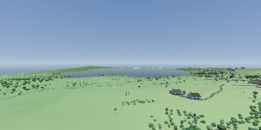
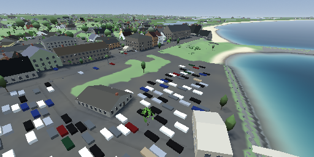
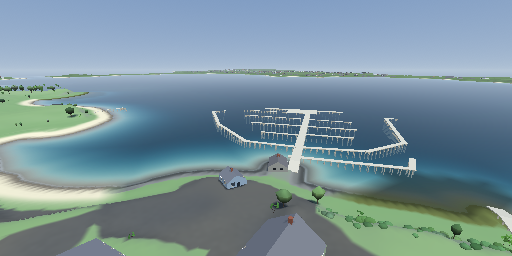
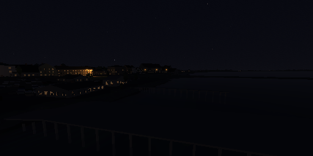

heightfield terrain engine · real-world landscape at 1:1
A C99 heightfield terrain engine by magmacrunch media. daffodil draws real ground: it reads a heightfield built offline from LiDAR elevation data, reprojected, tiled and written as raw float32 meters, then renders it faithfully and lets you walk on it. The landscape is surveyed, not sculpted.
There is no procedural generation and no terrain editor, because the ground is not the engine's to invent. Sibling to magnolia, the other C99 engine here, and to hologram, which solves the opposite problem. Built for Block Island Simulator, which is the island below.
Every frame below is a regression baseline, not a promotional render. Eight fixed views are photographed headless under software GL and compared pixel for pixel with the committed copy, and what each view drew is compared with a triangle budget, so these are reproducible by construction rather than posed. The counts are that budget, read off the same frame. Flat shading is the renderer, not a placeholder.

Chunked level of detail across the whole island at 1:1. 110,440 trees stand where the lidar measured them, drawn instanced in a single draw call and tinted onto the ground itself once they are too far away to draw. LOD is a tenfold triangle reduction overall: 1.87 M in the worst measured view against 18.7 M with every tile at full resolution. 761,344 terrain triangles · 1,395 trees · 2,988 shrub clumps

The town as one paved sheet with streets cut through it. 612 buildings stand solid, with real openings into their rooms rather than windows painted on, and the walker collides with them. Roads carry their own surface rather than being stripes on grass. 1,020,416 terrain triangles · 602,418 paving · 574 trees

The sheltered shores, the marina and the sea's edge in one frame. Water depth, the tide and the shoreline are the hardest thing in the engine to get right, which is why this view is one of the eight: it is a place something once went wrong, and it is photographed every build so it cannot go wrong again unnoticed. 1,048,832 terrain triangles · 190,194 paving · 650 trees

Lit by the real sun for a given date and time, going properly dark after it sets, with moonlight from the real moon and 8,404 stars from a real catalog in their actual places. Two lighthouses flash their published characteristics; street lamps light the road under them. Some windows are lit and some are not, and none of them flickers. 963,328 terrain triangles · 634,082 paving · 489 trees
daffodil does not produce heightfield data; it reads it. The producing pipeline lives in the consuming game's repository, in Python, and the two halves agree through a manifest file rather than through shared code. A tile is raw little-endian float32, row-major, and its sample values are meters above local mean sea level.
DAFFODIL_TILE_SAMPLES 257 // 512/2 + 1
DAFFODIL_TILE_METRES 512.0f
DAFFODIL_POST_METRES 2.0fThere is no height scale constant and no decode step: reading a tile is one fread
into a float*. A scale constant is a thing two languages can disagree about, and
this way they cannot. The +1 in the sample count is load-bearing too, because it
makes adjacent tiles share their edge row exactly.
The engine's demands are checked against OpenGL ES 3.0's guaranteed minimums rather than against whatever GPU is to hand. Fitting inside the floor means fitting on any conformant device, so a failure on real hardware is a driver problem rather than a design one. The audit runs with no GPU and no display, which means it runs over ssh.
It says nothing about speed. Not one of those limits is a rate, and the island reported
ok on every line while drawing at three frames a second on the one GLES3 GPU it
has met. Fits is not plays, and the two are worth keeping apart.
Windows / D3D11 · Linux / OpenGL · macOS / Metal · Raspberry Pi 4 and 5 / GLES3. One rasterizer, four backends, and a frame can be read back on all of them.
After the Daffodil cabin at Twin Maples on Block Island, which is the first ground it renders, and after Juanito Thompson's “Daffodil & Sweet Pea”.
PolyForm Noncommercial 1.0.0 · Copyright 2026 magmacrunch media. Any noncommercial purpose is permitted, and commercial use is reserved to magmacrunch media. Vendored sokol headers, by Andre Weissflog, keep their zlib license.
daffodil is developed in-house and is not publicly distributed. This page and the frames above are the public account of it.
For source access, licensing, or anything else, email info@magmacrunch.com.